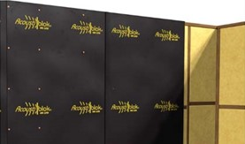
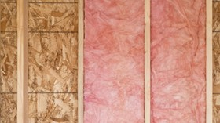
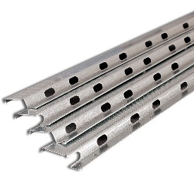
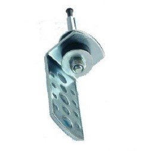
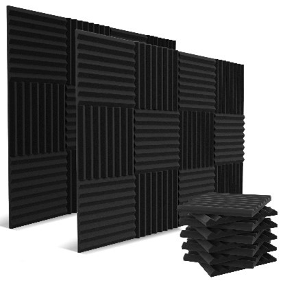

Table of contents |
|---|
| Abstract |
| Introduction |
| Analysis and discussion |
| Conclusion |
| References |
This post will teach us about the various sorts of sound insulating materials. To begin, we will examine the basic concepts of sound insulation to better understand how sound proofing works. After we grasp the principles, we can look at the various materials and how they employ these principles to improve sound insulation. Finally, when we have read everything about the physics of sound insulation and the many material options, we will decide which material is best and for what purpose.
Contrary to popular belief, there are several kinds of sound-absorbing materials, mostly distinguished by their cost and level of efficiency. Sound insulating materials come in a variety of shapes and sizes, from the soundproof drywall that most people have in their houses to the acoustic foam that recording studios utilize on their walls to achieve the ideal sound. Acoustic membranes, open cell cavity insulation, acoustic panels, decoupling products, and acoustic flooring are a few of the sound-absorbing materials I'll be discussing in this article.
To comprehend the efficiency of a sound insulating material, we first need to understand three fundamental ideas of soundproofing: deflection, absorption, and decoupling.
The amount by which sound waves deflect from a specific material is referred to as deflection. We can reduce the energy of the sound wave by adding more mass and dense materials between the source of the sound and the receiving point because we added greater bulk and material that it must pass through. This method can be used by simply adding more concrete to a wall or by using dense finishing boards such as plywood or plasterboard.
The concept of absorption refers to how much a substance soaks up or absorbs acoustic energy that enters it. Materials that absorb sound include acoustic mineral wool cavity insulation, which is inserted in voids in walls that, if not filled, can increase sound waves.
The principle of decoupling is to reduce the direct mechanical linkage between a structure, such as a wall, and the finishing materials. This approach is used to stop sound vibrations or flanking transmissions caused by the structure's stiffness. The use of acoustic hangers or resilient channels to help isolate drywall from the rest of the building's structure is an example of decoupling.
Now that we've addressed the fundamentals of sound insulation, we can move on to examining additional materials and how they are used.
Acoustic Membranes are typically available in 3mm and 6mm polymer-based rolls, making the material highly flexible, adjustable, and simple to install. It is often used to reduce airborne and impact sound within walls, ceilings, and floors. This membrane works by transforming acoustic energy into less harmful heat energy. They are regarded as one of the most effective materials because to their efficacy while also being thin, light, and easy to install.
Open cell cavity insulation is commonly used inside cavities and is typically made of rock wool, stone wool, mineral wool, or fiberglass. This type of insulation is found between wall studs, flours, and ceilings and is intended to fill the airspace found in these areas. The transmission of sounds is hampered or reduced by packing these areas.
As previously stated, resilient channels and acoustic hangers are the two most commonly used decoupling products. Resilient channels come in a variety of shapes and sizes, ranging from simple timber battens to aluminum metal rails. Once installed across wall studs or ceiling joists, all channel types are designed to lay over soundproofing insulation. Acoustic hangers, on the other hand, are isolation mounts that serve as a gasket between the resilient channels and the main structure.
 Acoustic flooring employs the previously mentioned decoupling effect. The objective is to limit noise transmission by separating the main floor surface from the subfloor with a rubber-based crumb, cork, or felt.
Acoustic foam is a type of wall-mounted foam panel that can be flat, chamfered, convoluted, wedged, or pyramidal in shape, and is often used in studios and music rooms to increase audio quality. It operates on the principle of absorption and re-calibration of internal acoustics, and it is not as effective as other materials at blocking outside sound.
Acoustic panels are sound-absorbing boards that are put on or near the surface of walls and ceilings. They are mostly used to manage internal acoustics. They can be reasonably effective when properly positioned and covering a sufficient surface area. They are regarded as a decorative alternative to acoustic foam due to their variety of shapes, styles, and colors.
Acoustic fabrics are typically found in theaters and cinemas. Specifically, in theatre curtains, blackout curtains, studio blankets, and even as wall lining in large rooms and halls for acoustic equalization. They are a very thick fabric that is helpful for dealing with acoustics in large rooms.
In conclusion, even though we have examined the majority of the sound insulating technologies, it is difficult to choose just one because they are all designed to be utilized in different contexts. Acoustic membranes are the greatest sound insulating material for personal use in a house since they can considerably reduce sound waves passing through walls and are simple to install. Despite being the greatest material, open cell cavity insulation methods are also fairly widespread in homes since they are not only good at soundproofing rooms, but they are also significantly less expensive than membranes and, as an added benefit, most of them also work as heat insulation. Commercial structures, such as offices, benefit most from decoupling solutions because they don't require sound insulation from the outside but do need to eliminate undesirable vibrations. Finally, acoustic fabric, foam, and panels are ideal for professional music studios and theatre studios since they absorb sound well and produce a great sound environment in a room.
Acoustiblok UK (2020). 30 Types of Soundproofing Materials Explained. [online] Acoustiblok UK. Available at: https://www.acoustiblok.co.uk/soundproofing-materials/.
www.soundproofingstore.co.uk. (2019). What is the best acoustic insulation? [online] Available at: https://www.soundproofingstore.co.uk/soundproofing-insulation.
Auralex Acoustics, Inc. (n.d.). RC-8TM Resilient Channel. [online] Available at: https://auralex.com/rc-8-resilient-channel/.
www.amazon.co.uk. (n.d.). 52 Pack Acoustic Panels 1 X 12 X 12 Inches - Acoustic Foam - High Density- Soundproof Studio Wedges - Charcoal : Amazon.co.uk: Musical Instruments & DJ. [online] Available at: https://www.amazon.co.uk/Pack-Acoustic-Panels-Inches-Soundproof/dp/B08QQRWDWS [Accessed 1 Nov. 2023].
Orentas, G. (2022). Learn The Pros And Cons Of Fiberglass Insulation. [online] Forbes Home. Available at: https://www.forbes.com/home-improvement/insulation/what-is-fiberglass-insulation/.
HEXAN - Suspended Ceilings. (n.d.). Acoustic Hanger 70mm (With Anchor). [online] Available at: https://www.hexan.co.uk/products/copy-of-acoustic-hanger-70mm [Accessed 1 Nov. 2023].